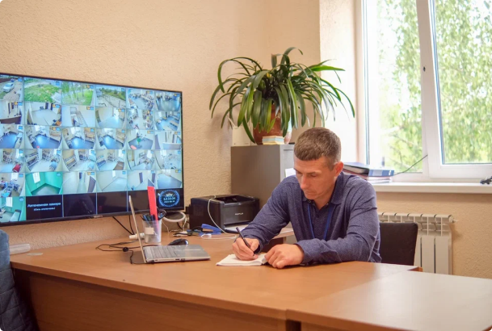
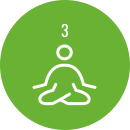
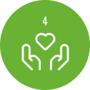

Диагностика и оценка: Каждый пациент проходит первичную оценку, которая позволяет разработать персонализированный план реабилитации.
Реабилитационный центр
Среди городской суеты и повседневных забот иногда мы теряем свой путь, заблудившись в зависимостях. Однако, есть место, где можно найти поддержку, вернуть себе контроль и начать новую главу. Реабилитационный дом "Весна" в Торжке – именно такое место. В этой статье мы рассмотрим, как реабилитационный дом помогает в борьбе с зависимостями и предлагает пациентам путь к выздоровлению и гармонии.
Зачем нужна реабилитация: цель и польза
Реабилитация играет важную роль в лечении наркомании, алкоголизма и лудомании. Её цель – не только освобождение от вредных привычек, но и восстановление физического и психологического здоровья. Процесс реабилитации помогает пациентам научиться справляться с стрессом, улучшить самооценку, восстановить нарушенные социальные навыки и вернуться к полноценной жизни.
Андреев Сергей Александрович (программный руководитель)

Этапы реабилитации: шаг за шагом к выздоровлению
Реабилитация зависимых в реабилитационном доме "Весна" проходит через несколько ключевых этапов:

Психотерапия: Индивидуальные и групповые сессии помогают пациентам разобраться в причинах зависимостей, научиться управлять эмоциями и развивать позитивное мышление.
Отказ от вредных привычек: Этот этап включает медицинское вмешательство, помощь в снятии отрицательных симптомов и обучение стратегиям справления с желаниями.

Социальная реабилитация: Пациенты учатся общаться, сотрудничать и находить поддержку в обществе. Развивают навыки, необходимые для успешной адаптации после реабилитации.
Реабилитационный центр в Тверской области
Цель реабилитационного центра в Тверской области заключается в оказании помощи людям, столкнувшимся с различными проблемами здоровья, и поддержке их восстановления и реабилитации
В целом, реабилитационный центр в Тверской области стремится помочь людям восстановить свои жизненные навыки, улучшить здоровье и самочувствие, а также достичь наилучших результатов при различных проблемах с физическим и психологическим состоянием.

Необходимость реабилитационных домов
Реабилитационные дома играют важную роль в процессе выздоровления, предоставляя структурированную и поддерживающую среду. Они объединяют экспертов разных областей, чтобы обеспечить комплексный подход к лечению зависимостей.

- Профессиональный медицинский уход: В реабилитационном доме в Торжке вас окружит высококвалифицированный медицинский персонал, готовый обеспечить вам лечение и уход, необходимые для вашего восстановления. Это включает в себя врачей, медсестер и физиотерапевтов, которые помогут вам вернуть здоровье и мобильность.
- Индивидуальный подход: Важным преимуществом реабилитационного дома является индивидуальный подход к каждому пациенту. Ваш план реабилитации будет разработан с учетом ваших уникальных потребностей и хронических заболеваний. Это позволяет достичь наилучших результатов в вашем восстановлении.
- Комфортное проживание: Реабилитационные дома обычно обеспечивают комфортные условия для проживания. Вам предоставят уютные комнаты, питание, и, в некоторых случаях, даже доступ к развлекательным мероприятиям. Это создает благоприятную атмосферу для вашего восстановления.
- Социальная поддержка: В реабилитационных домах часто организуются групповые занятия и мероприятия, которые способствуют восстановлению и социальной адаптации. Вы сможете общаться с другими пациентами, делиться опытом и получать психологическую поддержку.
Таким образом, реабилитационный дом в Торжке предоставляет широкий спектр преимуществ, которые способствуют вашему успешному восстановлению и улучшению качества жизни.
Распорядок реабилитационного центра включает:
s- Подъем и зарядку.
- Завтрак.
- Утреннее собрание.
- Групповую терапию.
- Обед.
- Тренинги в группах.
- Индивидуальные задания.
- Ужин.
- Личное время.
- Итоги дня и отбой.
Цели реабилитационного дома "Весна"
Реабилитационный дом "Весна" в Торжке ставит перед собой миссию помочь каждому пациенту обрести равновесие и восстановить качество жизни. Основные цели дома – поддержать пациентов в избавлении от зависимостей, помочь им вернуться к социальной активности и научить эффективным стратегиям управления стрессом.

Роль реабилитационных домов

Реабилитационные дома играют важную роль в нашем обществе, предоставляя
неоценимую помощь тем, кто нуждается в поддержке и восстановлении своего здоровья.
Эти учреждения имеют глубокое влияние на жизнь людей, сталкивающихся с различными
физическими, психологическими или социальными проблемами.
Реабилитационные дома также выполняют важную роль в психологической поддержке и
социальной реабилитации пациентов. Психологи, социальные работники и другие
специалисты помогают пациентам преодолеть эмоциональные и психологические
трудности, связанные с их состоянием здоровья, и справиться с социальными проблемами.
Реабилитационные дома создают комфортную и поддерживающую атмосферу, где
пациенты могут общаться, делиться опытом и находить взаимопонимание, что способствует
их восстановлению.
Однако, роль реабилитационных домов не ограничивается лишь медицинскими и
психологическими аспектами. Эти учреждения становятся местом формирования
сообщества, где пациенты могут поддерживать друг друга и взаимодействовать.
Обмениваясь опытом, общаясь и работая вместе, они находят поддержку и вдохновение для
продолжения своего пути к выздоровлению.
Реабилитационные дома являются неотъемлемой частью здравоохранения, обеспечивая
медицинскую помощь, поддержку и восстановление для людей, столкнувшихся с
проблемами здоровья. Они помогают пациентам преодолеть физические и эмоциональные
трудности, обрести надежду, мотивацию и возможность восстановить свою жизнь.
Реабилитационные дома являются источником поддержки, взаимопомощи и возможности
для пациентов стать более сильными и самостоятельными.
Реабилитационные мероприятия: путь к самопознанию
В "Весне" проводятся разнообразные мероприятия, в том числе:
- Лекции: образовательные сессии о вреде зависимостей и методах преодоления.
- Тренинги: учебные занятия для развития психологической устойчивости и социальных навыков.
- Малые психотерапевтические группы: интимные дискуссии, способствующие взаимопониманию и поддержке.

- Письменные задания: рефлексивные задачи для стимулирования саморазвития.
- Мониторный час: время для личной рефлексии.
- Медитация: практика для укрепления психического здоровья.
Заключение: Новый этап жизни через реабилитацию
Реабилитационный дом "Весна" в Торжке ставит перед собой миссию помочь каждому пациенту обрести равновесие и восстановить качество жизни. Основные цели дома – поддержать пациентов в избавлении от зависимостей, помочь им вернуться к социальной активности и научить эффективным стратегиям управления стрессом.
Фотогалерея: